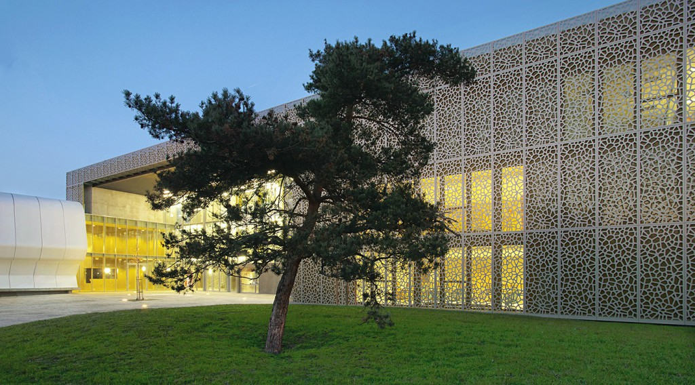
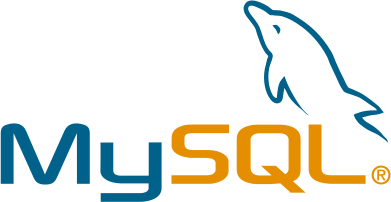
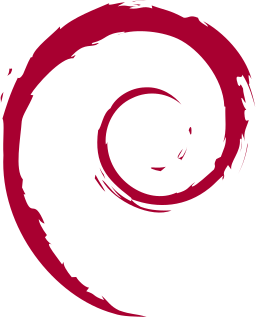
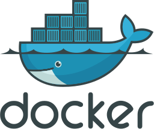
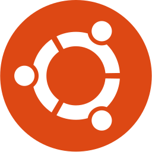

À propos de moi
Salut le monde !
Moi c’est Alexandre Martin. J’ai 29 ans, je suis Site Reliability Engineer. Ancien étudiant de l'Efrei.Je suis passionné par le développement web et les systèmes (GNU)/Linux depuis le collège. Autodidacte, j’aime apprendre les choses par moi même et créer.
Lors de mes premières années à l’Efrei je me suis découvert une nouvelle passion pour l’administration système et la sécurité informatique.
Sinon j’aime bien le cinéma, les séries, MTG, le rock et les pizzas.
Mes études
2012-2014
Jean Rostand
Lycée Jean Rostand, Villepinte.
Baccalauréat STI2D - Systèmes d'information et numérique. Mention très bien.

2016
Staffordshire University
Staffordshire Univeristy, Stoke-on-Trent -
Royaume-uni.
Semestre d'immersion à l'étranger en informatique dans le cadre de l'Efrei.
2014-2019
Efrei
Efrei - École d'ingénieur généraliste en informatique et
technologies du numérique, Villejuif.
Formation d'ingénieur en sécurité informatique.
Mes expériences
-
Cloud provider 2026 - presentSite Reliability Engineer
Gestion des infrastructures cloud et de services associés pour un Cloud Provider Européen. -
Chapsvision - ex. Owlint 2021 - 2026Responsable CloudOps Paris
Gestion des infrastructures des entités Parisiennes du groupe. Auparavant responsable infrastructure pour Owlint. -
Gandi.net 2019 - 2021Ingénieur sécurité informatique
Bureau d'enregistrement de noms de domaine et hébergeur web. -
Division Studio 2016 - 2019Co-fondateur/RSI/développeur
Studio de développement web que j'ai cofondé en mai 2016. -
SQORUS Avril 2018 - Septembre 2018Administrateur système
Dans le cadre de ma 4e année à l'Efrei. -
Efrei Linux 2016 - 2018Président des mandats 2016-2017/2017-2018
Association du Groupe Efrei traitant du logiciel libre et de la sécurité informatique. -
Tacite Juillet 2017Développeur back-end
Développement back-end (Laravel) dans une start-up Liégeoise (Belgique).
Ma stack technique
Développement
Go Lang
Au quotidien- Tooling
- SOA

Python
Au quotidien- Scripts
- Security tools
- SOA
Mongo DB
Régulièrement- MongoDB

MySQL
De temps en temps- MySQL
- MariaDB
Administration système

Debian
Au quotidien- Debian 6
- Debian 7
- Debian 8
- Debian 9
- Debian 10
- Debian 11
Kubernetes
Au quotidien- k8s
- Rancher

Docker
Au quotidien- Docker
- Docker-compose

Ubuntu
Régulièrement- Ubuntu
- Installation
- Utilisation